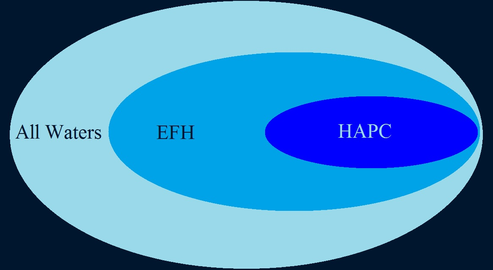

Corals and coral reefs are among the most diverse ecosystems on earth, and healthy coral reef ecosystems support fisheries by providing habitat and feeding grounds for many aquatic species.
The health and persistence of reef systmes is an integral part of maintaining productive and sustainable fisheries. The Gulf of Mexico Fishery Management Council is responsible for providing management
advice for coral in the Gulf of Mexico to the Secretary of Commerce.
Currently, the Council manages more than 140 species of black and stony coral, including species that are on the federal list of threatened
species. The primary mechanisms for protecting corals have been through the creation of sanctuaries and reserves, the designation of habitat areas of particular concern (HAPCs), and limiting harvest of corals.
What are Habitat Areas of Particular Concern?
HAPCs are a subset of essential fish habitat (EFH) that meet certain criteria - things like rarity, ecosystem importance, or
sensitive to human impacts. These areas may have fishing regulations, but they don't have to. A map of all the HAPCs in the Gulf,
including those without fishing regulations, and areas being considered for HAPC status in Coral Amendment 9 is available here.

Schematic showing different management categories of fishery resources. The ecological importance and need to manage fishery resources in each category increases from left to right.
Download coral closed areas
East and West Flower Garden Banks
East and West Flower Garden Banks, twelve miles apart, both managed within the Flower Garden Banks National Marine Sanctuary, feature over 600 acres of spectacular high density coral reefs. Fishing with bottom longline, bottom trawl, buoy gear, dredge, pot, or trap and bottom anchoring by fishing vessels is prohibited year-round.
McGrail Bank habitat features include ridges and valleys. McGrail Bank has the shallowest crest known of any of the shelf-edge banks west of the Mississippi Delta. Fishing with bottom longline, bottom trawl, buoy gear, pot or trap, and bottom anchoring by fishing vessels is prohbited year-round.
Pulley Ridge is the deepest known photosynthetic coral reef in the conitental U.S. The reef is dominated by mesophotic corals that range in depth from 200 to 250 feet.
Fish with bottom longline, bottom trawl, buoy gear, pot or trap, and bottom anchoring by fishing vessels is prohibited year-round.
Section 622.74 Area closures to protect Gulf corals (d).
GIS Data: Shapefile
Metadata: polygon html